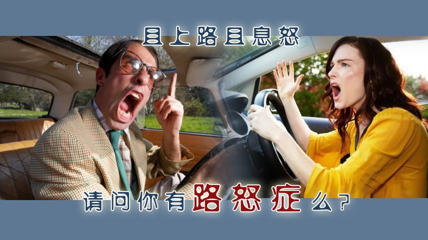
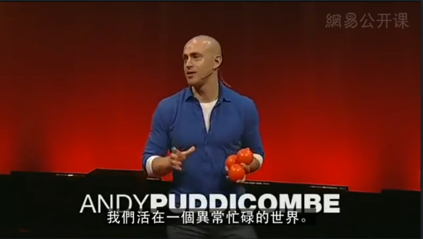
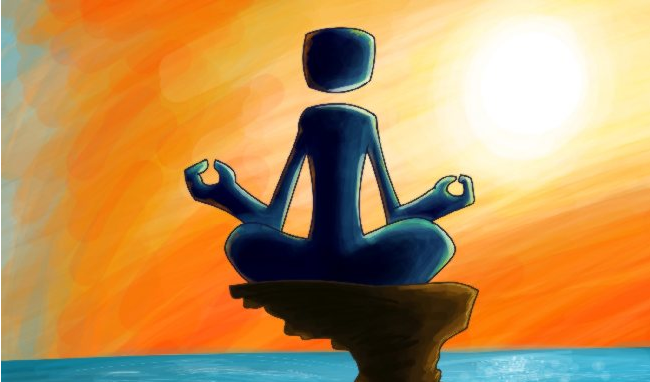

从我最近犯的路怒症说起，在TED看了“一切只需要十分钟的专注”的视频想到了可以通过每天进行这十分钟的修炼来让自己保持平静，从而提升修养，所以这篇文章就和大家一起来初步的了解和学习一下冥想的相关知识。

一直在想克制自己的路怒症，但是还是偶尔会很生气。最近的一次大的爆发是在商场进停车库找位子的时候，被后面的人狂按喇叭催促，一路从入口经过闸机到进到地下车库里面不停的按着喇叭，事实上我的速度一点都不慢，是正常的停库内应该有的驾驶速度，最后一气之下踩停，双闪，摇窗开骂，把心里积聚的各种脏话臭话在一分钟内全吐了出去，老婆在边上拦也拦不住，因为自己车上只有老婆和我两个人，不知道对方车内几个人为了保证人身安全还没有傻到下车冲过去。骂完后对方没啥大的反应在一个分叉口从别的方向驶离了，骂完的那一时是爽了，但是事后总归是心情难以平复，一来自己也在反思何必为了这样低素质的人自己动肝火呢？二来要是对方是一个比想象还要恶劣的人要是动起手来那就更不划算了，开开心心出来玩，会坏了一天甚至更久的心情。回想自己最早一次因为开车和人对骂已经是两年前的事情了，到现在想起来都还是觉得愤愤，可见一次生气的影响力之深远，但是事情到气头上了呢总是又忍不了，每每这时总是感叹自己的修行还不够。

刚好昨天看了一个主题为“一切只需要十分钟的专注”的TED演讲。演讲的内容大致是说如何正确的面对当下，需要去放空大脑，每天花十分钟的专注，专注于什么也不想，不回忆过去，不思考未来，只是放空，来让大脑感受当下，由此来领悟活在当下的意义，通过这样的方法来消除浮躁回归自我和初心。这种告别负面情绪，积极掌控生活的方法就是冥想。那么今天就让我们一起来简单肤浅的学习一下冥想的知识：
什么是冥想
冥想有什么好处
怎么样进行冥想

-什么是冥想
百度百科关于冥想的解释如下：
冥想，英文是meditation，是瑜伽中最珍贵的一项技法，是实现入定的途径。一切真实的瑜伽冥想术的最终目的都在于把人引导到解脱的境界。一名习瑜伽者通过瑜伽冥想来制服心灵（心思意念），并超脱物质欲念。感受到和原始动因（The Original Cause万源之源）直接沟通。瑜伽冥想的真义是把心、意、灵完全专注在原始之初之中。
看完这样的一个解释，我的第一个感觉就是好玄，不知道或者说不是很明白到底冥想是个什么。于是我又继续在网络上寻找，希望有先知者可以有更好的引人入门的解释，结果我找到了下面这段话：
冥想实质上初期是一种感知状态，中期是一种心灵境界，后期是真我本性的光芒之“回归”，冥想的终极目标是真我和冥冥相接后相结，佛教里叫“涅盘”，道教里叫“天人合一”，西教里叫“大爱无边”，印度教里叫“梵我合一”， 伊斯兰教里叫“安拉之境”，苏菲神秘主义里叫“人主合一” ，超心理神秘学里叫“一味”。正是因为冥想的非能指性，又因为语言的局限性，冥想是不可以说也不好说的。然而，道可道，非常道，名可名，非常名！
冥想一词，很容易让人产生误解，因为中文里有一个成语叫苦思冥想，所以基本上绝大多数的冥想修行者都错以为冥想就一定是以某种特定的方式在静思或静悟些什么，其实冥想的真实含义并非如此，实际上“冥想”如同“命运”一样是由不同的二个字所构成的，“命运”指的是先天之命+后天之运之总和，“冥想”就应是冥+想的合体。冥这里的意思指的是虚空渺茫（参见《庄子·在宥》里——至道之精,窈冥冥。）和静默（参见归有光《项脊轩志》里——冥然兀坐,万籁有声），想则是念想，故“冥想”一词的真意就是空渺静默之念。
到这里，终于可以给出一个比较朴素的解答了：冥想是一种可以让人心情平静的方法。比较肤浅，但是对于第一次接触的人来说可以方便理解，而不至于进入误区。
-冥想有什么好处
冥想是一种身心双修的法门，首先对于肉身躯壳的健康大有裨益，因为冥想能改善大脑，保持脑细胞的年轻活力，调节神经、内分泌系统，使人体免疫功能增强，防止老化，从而起到自我修护基因的效果，提高防病和自然治病（人体发生疾病时的自愈力）能力。 其次对于精神和心灵更具显著效果，普通人通过冥想可以舒缓减轻精神压力，释放排除焦虑忧郁纠结哀愁忿恨等负面情绪，通过调整人的内在情绪从而获取平静而快乐的状态，达到真正“修身养性”的目的。 而修行者经过后期的深度冥想与觉醒，使本我解脱，回归冥冥。
对于提到的生理上的这些帮助，虽说有很多的科学实验已经能够对其进行一些证明，但是具体到每个人身上的效果是否明显这个比较难以判断，但是我深刻的相信，在心理上或是说精神上冥想所能带来的这些益处是靠谱的。非淡泊无以明致，非宁静无以致远，保持一颗平静的心，或者有些地方称之为平常心，对我们的生活是很有帮助的。而正是修养的提高，从而减少了那些负面的情绪，又能够进一步的对生理上的健康提供积极的影响。
-怎么样进行冥想
上文提到了冥想有三个层次，初期是一种感知状态，中期是心灵境界，后期是真我回归，我们只是刚刚开始打算入门，所以这里就简单的介绍一下初期如何修炼吧。
初级冥想的实质就是一种感知状态，从感知中获取的某种状态。那么究竟该如何去感知呢？对于有些人来说“感知”是一件挺难的事，因为你会发现自己思绪翻滚，万念俱飞。让我们通过三个阶段来修炼初级冥想。
第一个阶段，感知状态是人内心的感觉，所以只可意会很难言传，那么究竟该如何去意会去体会什么叫做“感知状态”呢？这里特别推荐一个非常给力的法门适合大家去做,首先请你随意挑选一个小东西用来做你自己的“信物”（最好是那种可以随身携带的东西），然后坐下或半躺着（无所谓姿势舒服就行），把你的“信物”放置在你面前，把你的思想专注在你的“信物”上，用柔和的眼光专心地凝视着看着它，看吧看吧看吧……一直看着，直到把自己看“傻”了,看“出神”了，看到“视而不见”“听而不闻”了，只要你做到了那么恭喜你，你已经找到了最原始最基础的初级“感知状态”！下面你所要做的就是去熟悉它，去亲近它，去体会和品味它。因为那个“信物”很小可以随身携带很方便，所以你就有可能有机会经常去做，去练习这种方法，去熟悉初级“感知状态”。
第二个阶段，当你已经可以做到不用凝视哪怕是闭着眼睛也可以有那种感觉的时候，你就可以进入第二层的习练了。此时你可以选择坐着或躺着，平心静气地闭上双眼，记住一定要带着那种“感知状态”的感觉去做一件你喜欢的事情,比如听某种声音（音乐）或闻某种味道（燃香）或感觉自己的呼吸气息或默念自己最喜欢的一个词或一句话（诗句或佛号或咒语）或感觉自己身体的某个部位或体会观察自己的中轴线等等等等，总之一定要做件事就成，千万别让自己空下来没事做。你就这么练着，这叫“感知状态”的积累和蜕变，坚持就这么做下去，也许某一天你会突然发现自己有了新的与过去完全不一样的感觉，这就是“连绵不断的感知状态”。
第三个阶段，严格来说从这一阶段起才叫做真正意义上的冥想，前二个阶段只是打个基础做“准备活动”，目的只有一个——获取“连绵不断的感知状态”，而一旦成功获取了，就可以开始真正意义层面上的冥想了，就用这种“连绵不断的感知状态”的感觉坐下来，开始开启“内在智慧与喜悦”的冥想吧，此时的你，过去的所有做法全须抛掉，不再做任何事情，这就叫无为至简，什么也不理什么也不做，一切念头任其来去，不纠缠不参与不跟随不纵不迎不拒，所有你要做的事就是“傻傻呆呆”地“等待”，“等待”空渺静默之念从意识层次过渡到心灵层次，完成“渐进”中的量变妙化。
在冥想习练中，我们的身体就相当于我们的外部环境，我们必须先降低身体的兴奋度，让自己的身体对外界不太敏感，让自己的思维不太活跃，让自己比较容易地静下心来。
-尾声
通过上面的内容，对冥想算是有了一个很初级的认识，自己接下来打算尝试尝试，希望可以有所感悟和收获。最后引用之前提到的TED演讲的最后几句话作为这篇文章的结尾吧：我们不能改变生活中客观存在的很多东西，但是我们可以改变我们自己怎么样去感受它，通过冥想，每天花十分钟，让我们的大脑和思维退后一步，熟悉当下的时光，感觉一个更高级的专注、平静以及对生命的澈悟。